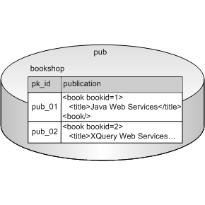
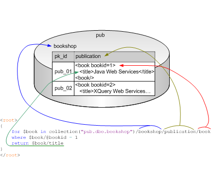

Querying XML Type Data
DB2, Microsoft SQL Server, and Oracle support a native XML data type, XML Type. DataDirect XQuery allows you to access XML Type data stored in relational databases using standard XQuery.
Consider a relational database, pub. It contains a table, bookshop, with a publication column; the publication column is defined with the XML Type data type. Data in the publication column is stored as XML – there is a book element with a bookid attribute, and a title subelement.

Once you know the structure of the XML in the relational tables you want to query, writing the XQuery is simple. DataDirect XQuery’s support of XML Type lets you use XQuery to query XML data stored in relational databases. For example, this XQuery returns the title element of the book element whose bookid attribute equals 1:
<root> { for $book in collection("pub.dbo.bookshop")/bookshop/publication/book where $book/@bookid = 1 return $book/title } </root>Let’s take a closer look at DataDirect XQuery’s support of XML Type. As shown in the following illustration, the collection function identifies the resource to be queried – in this case, the table bookshop on the relational database pub. The arrows depict how the XQuery expression following the collection function is used to navigate the XML stored in the table bookshop

The rest of this section provides additional information about using DataDirect XQuery to query XML Type data.
Supported Databases
DataDirect XQuery is able to directly query database tables with XML Type columns for the following database versions:
*XML Type is supported only for these versions of DB2 that use pureXML storage. XML Type is not supported for DB2 databases that use XML Extender.
For more information about how DataDirect XQuery translates XQuery into SQL for execution by the database engine, see Querying Relational Data.
Evaluating Queries in Memory
Not all relational databases support XQuery, even if they do support XML Type (versions of Oracle prior to 10gR2, for example). Consider the following example, a simple XQuery that uses the collection function to query a relational table:
If this XQuery is executed against a relational database that does not support XQuery, DataDirect XQuery throws the following error:
[DataDirect][XQuery]Error at line 1, column 52. The XMLType column "COLXML" can only be used as return expression or argument of a ddtek-sql function.Similarly, you cannot use XPath expressions, except for the
node()or*steps, or other XQuery expressions on the content of the columns in relational tables. For example consider the database table, holdingsxml, which stores XML data in the userid and holdings columns:
If you specify your XQuery as:
the following message is returned:
One way to avoid issues with database support for XQuery is to use the ddtek:evaluate-in-memory extension expression.
The ddtek:evaluate-in-memory extension expression allows you to evaluate XQuery expressions on the value of the XML column in memory. Consider the following example:
let $v1 := collection('holdingsxml')/holdingsxml/holdings return (# ddtek:evaluate-in-memory #) {$v1//share}The advantages of using ddtek:evaluate-in-memory is that the XQuery is portable across databases, and it allows you to use the complete DataDirect XQuery feature set to query the XML stored in the database.
However, using ddtek:evaluate-in-memory requires the instantiation of all the XML in memory, even if only part of it is needed by the XQuery. The holdings column in the sample database used in the previous example, for example, contained small XML fragments; but there is no practical limit to the size of the XML that can be stored in a relational column, and reading large XML fragments into memory for query processing can decrease performance and affect scalability.
Another potential limitation of using the ddtek:evaluate-in-memory extension expression is that it can be used with a only limited set of XQuery expressions.
See Using Extension Expressions for more information on ddtek:evaluate-in-memory.
Using Database-Specific Functions
An alternative to evaluating XQuery in memory is to use database-specific functions to query data stored on relational databases. See Database-Specific Query Functions to learn how to query XML Type data for databases that do not support XQuery.